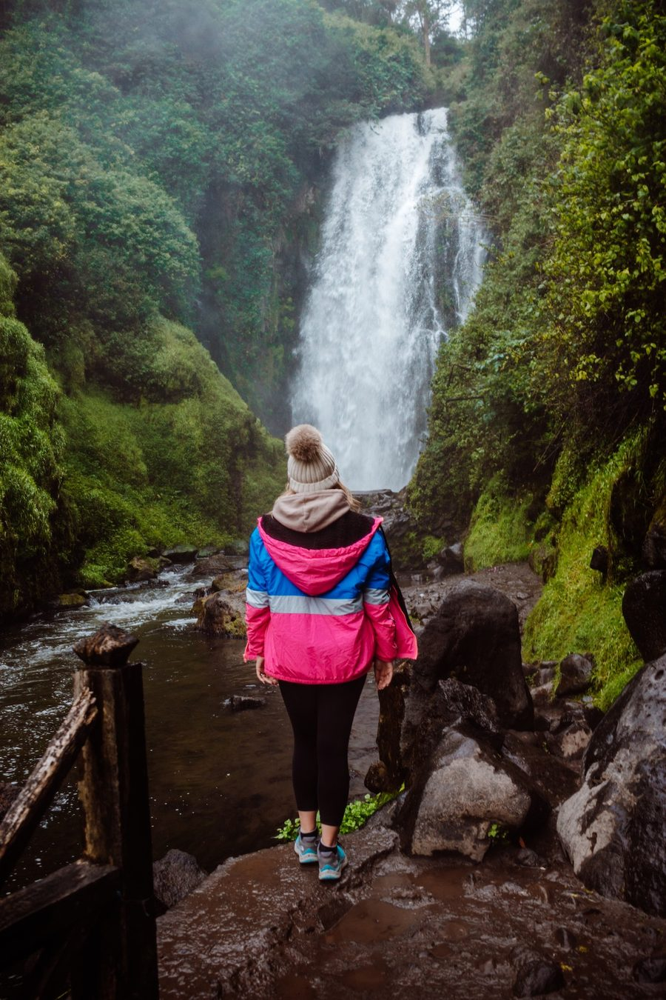

Cuatro destinos, una sola experiencia
Lagos de origen volcánico, una cascada sagrada y un nevado de 5.790 metros. Recorre los Andes del norte del Ecuador entre naturaleza, cultura y aventura.
El norte andino del Ecuador, en un solo viaje
En pocas horas de camino conviven un lago rodeado de comunidades indígenas, una laguna con historia, una cascada de ceremonias ancestrales y un volcán nevado.
Este sitio reúne información de cuatro lugares de las provincias de Imbabura y Pichincha: qué ver, qué hacer, cómo prepararte y cómo armar el recorrido. Encontrarás fichas de cada destino, una galería de fotografías, tres paquetes con precio y duración, itinerarios hora por hora y un formulario para consultarnos.

Elige por dónde empezar
Cada tarjeta lleva a la ficha completa del lugar.


Naturaleza · Cultura · Aventura
Naturaleza
Lagos, bosque andino, cascadas y glaciares en un mismo recorrido.
Cultura
Comunidades indígenas, mercados de artesanías, leyendas y celebraciones como el Inti Raymi.
Aventura
Senderos, ciclismo junto a la laguna y excursiones de alta montaña con guía.
¿Listo para armar tu viaje?
Mira los paquetes de 1, 2 o 3 días, o escríbenos con tus dudas.